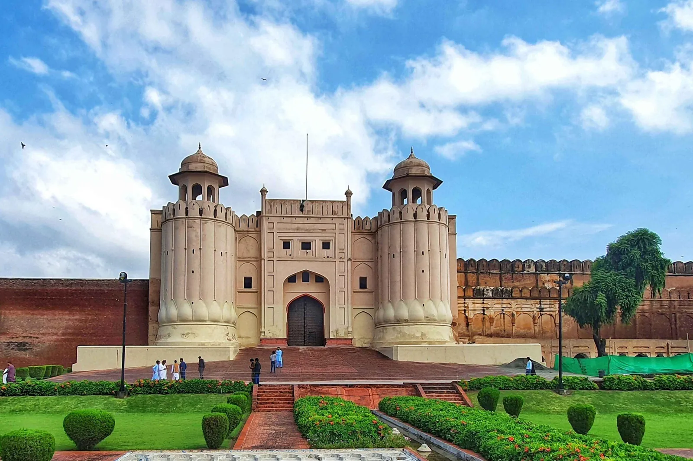

Only have one day in Lahore? It is enough to see the city’s greatest monuments, walk its oldest streets, eat very well and end with the famous flag ceremony at the Wagah Border. This is the plan we use on our own Lahore full-day tour.
Morning: the Badshahi Mosque and the Lahore Fort
Start early, when the light is soft and the courtyards are quiet. The Badshahi Mosque, completed by Emperor Aurangzeb in 1673, has one of the largest courtyards of any mosque in the world. Opposite it stands the Lahore Fort, a UNESCO World Heritage Site, with the Sheesh Mahal (Palace of Mirrors) and the huge tiled Picture Wall. Allow at least two hours for both.
- Dress modestly and carry a scarf: see what to wear in Lahore
- Read our guides to the Lahore Fort and the Badshahi Mosque
Late morning: into the Walled City
Walk or ride a rickshaw through the old city to Delhi Gate, the restored Shahi Hammam royal baths and the Wazir Khan Mosque, famous for its colourful tile work. The lanes in between are full of spice sellers, sweet shops and centuries-old havelis. Prefer to ride? Try our Rangila rickshaw tour.
Lunch: Lahori food
Lahore is Pakistan’s food capital. Stop for a lunch of fresh naan, karahi, nihari or chana, and finish with a cup of doodh patti chai or a cool lassi. Read our Lahore food guide for what to order.
Afternoon: the drive to the Wagah Border
In the afternoon, head east to the Wagah Border, about an hour from the city. The flag-lowering ceremony takes place every evening shortly before sunset, so the timing changes through the year. Arrive early to get a good seat, and bring your passport. Read more about the Wagah Border ceremony.
Evening: dinner with a view
Back in the city, finish at Fort Road Food Street, where rooftop restaurants look straight across at the illuminated Badshahi Mosque. It is the perfect last image of Lahore.
Tips for the day
- Start by 8 or 9 am to beat the heat and the crowds
- Use a car with a driver for the Wagah leg; it saves time and stress
- Keep small change for shoe keepers, tea and snacks
- From November to January, check the air quality: smog can be heavy some days
Let us plan it for you
Our Lahore full-day tour follows this route with an English-speaking guide, a private car, hotel pickup and all entry tickets included. Have two days? Add the Shahdara tombs or the Night Sufi shrine tour.
Explore with Past Enlighten
Ask about route options, dates and what is included. Confirm the price and itinerary in writing before you book.
Continue planning
Travel conditions, access, schedules and prices can change. Confirm current details locally before departure.